本工程覆盖论文主要公式、预测与决策模型、多期离线评估、参数和数据量敏感性分析，以及模拟干预的匹配、回归、双重差分流程。完整训练实验使用自生成数据；作者披露数据另行计算。它是可运行的方法重建，不能等同于原始京东数据上的逐数值精确复现，也不能替代论文原始实地实验。
离线模型及附录实验保留V3结果，新增两个现场校准模型。匹配模型在2—8天提前期、可能交叉、混合积欠/丢失销售环境中，以实际滚动成本训练；原闭式标签未用于这个环境。校准头冻结离线MQ-RNN表示并修正Normal基库存目标，这是工程扩展，不是原作者现场神经网络的精确恢复。
全部商品配对比较：Normal成本34868.01，旧迁移策略43452.30，新匹配校准策略40757.70。新版相对旧迁移策略变化-6.20%，相对Normal变化+16.89%。因此即使训练条件已修正，仍不能声称恢复了论文现场降本结论；其他控制策略及独立面板也全部公开。
配置 standard；2,000 个合成商品—仓库序列 × 420 天 = 840,000 行日需求；训练样本 47,806，验证样本 8,975。随机种子 20261019。设备 cuda，NVIDIA GeForce RTX 4060 Laptop GPU。本次入口用时 153.6 秒（重用缓存时不代表原训练总时长，逐模型时间见 tables/train 与 logs/model）。每个非默认设置均实际重新训练，最优轮次由验证集选择。
离线E2E平均30天总成本2042.07，Normal为2814.61，相对变化-27.45%。模拟现场处理组总成本46933.17，对照组40077.27，相对变化+17.11%。本次模拟现场没有重现论文的总成本下降结论；程序执行通过不代表论文所有实证结论已得到重复支持。
下面是同一批商品、同一需求和初始库存/在途订单的配对比较，不能与后面的匹配组均值混算。V3迁移、离线条件校准、匹配条件校准和Normal全部保留。旧测试期已用于问题诊断，属于探索评估；额外三组固定独立面板仅用于评估，没有按结果选权重。训练条件匹配不保证测试成本更低。
| environment | policy | holding_cost | stockout_cost | total_cost | stockout_ratio | relative_to_Normal_pct | paired_difference | paired_ci_low | paired_ci_high | n_series |
|---|---|---|---|---|---|---|---|---|---|---|
| lead1_backorder | Normal | 24765.4722 | 5035.6096 | 29801.0818 | 0.0833 | 0.0000 | 0.0000 | 0.0000 | 0.0000 | 2000 |
| lead1_backorder | V3_Transfer | 15754.2139 | 16482.5761 | 32236.7900 | 0.2112 | 8.1732 | 2435.7082 | 1928.6690 | 2942.7473 | 2000 |
| lead1_backorder | V4_OfflineCalibrator | 13604.7280 | 20272.7195 | 33877.4475 | 0.2582 | 13.6786 | 4076.3657 | 3536.3777 | 4616.3538 | 2000 |
| lead1_backorder | V4_MatchedCalibrator | 12183.9246 | 25498.9057 | 37682.8303 | 0.2989 | 26.4479 | 7881.7484 | 7176.9907 | 8586.5062 | 2000 |
| lead1_hybrid | Normal | 24765.4722 | 4613.6084 | 29379.0806 | 0.0832 | 0.0000 | 0.0000 | 0.0000 | 0.0000 | 2000 |
| lead1_hybrid | V3_Transfer | 15907.4526 | 12951.9982 | 28859.4508 | 0.2083 | -1.7687 | -519.6298 | -850.3316 | -188.9280 | 2000 |
| lead1_hybrid | V4_OfflineCalibrator | 13752.0525 | 15821.5236 | 29573.5761 | 0.2545 | 0.6620 | 194.4955 | -194.3333 | 583.3243 | 2000 |
| lead1_hybrid | V4_MatchedCalibrator | 12350.2714 | 18462.0486 | 30812.3200 | 0.2937 | 4.8784 | 1433.2394 | 982.5051 | 1883.9738 | 2000 |
| lead2_backorder | Normal | 27393.6819 | 7498.4683 | 34892.1502 | 0.0994 | 0.0000 | 0.0000 | 0.0000 | 0.0000 | 2000 |
| lead2_backorder | V3_Transfer | 15486.8460 | 29397.8650 | 44884.7110 | 0.2755 | 28.6384 | 9992.5608 | 8932.9877 | 11052.1339 | 2000 |
| lead2_backorder | V4_OfflineCalibrator | 16789.1177 | 22871.3858 | 39660.5035 | 0.2424 | 13.6660 | 4768.3533 | 4032.2356 | 5504.4710 | 2000 |
| lead2_backorder | V4_MatchedCalibrator | 15693.0785 | 26239.6112 | 41932.6897 | 0.2658 | 20.1780 | 7040.5395 | 6209.7603 | 7871.3186 | 2000 |
| lead2_hybrid | Normal | 27393.6819 | 7474.3269 | 34868.0088 | 0.0994 | 0.0000 | 0.0000 | 0.0000 | 0.0000 | 2000 |
| lead2_hybrid | V3_Transfer | 15522.1582 | 27930.1399 | 43452.2981 | 0.2747 | 24.6194 | 8584.2893 | 7618.6216 | 9549.9569 | 2000 |
| lead2_hybrid | V4_OfflineCalibrator | 16801.0797 | 22233.6140 | 39034.6937 | 0.2421 | 11.9499 | 4166.6849 | 3452.4072 | 4880.9626 | 2000 |
| lead2_hybrid | V4_MatchedCalibrator | 15711.6504 | 25046.0461 | 40757.6965 | 0.2653 | 16.8914 | 5889.6877 | 5111.3831 | 6667.9922 | 2000 |
| panel_seed | policy | n_series | total_cost | holding_cost | stockout_cost | stockout_ratio | relative_to_Normal_pct | paired_difference | paired_ci_low | paired_ci_high |
|---|---|---|---|---|---|---|---|---|---|---|
| 20261020 | Normal | 1000 | 34042.0301 | 27010.0770 | 7031.9530 | 0.0994 | 0.0000 | 0.0000 | 0.0000 | 0.0000 |
| 20261020 | V3_Transfer | 1000 | 42915.9474 | 15256.8647 | 27659.0826 | 0.2751 | 26.0675 | 8873.9173 | 7528.4790 | 10219.3555 |
| 20261020 | V4_OfflineCalibrator | 1000 | 38564.0059 | 16629.9961 | 21934.0098 | 0.2415 | 13.2835 | 4521.9759 | 3601.0949 | 5442.8568 |
| 20261020 | V4_MatchedCalibrator | 1000 | 40309.6792 | 15538.2338 | 24771.4454 | 0.2674 | 18.4115 | 6267.6491 | 5235.4365 | 7299.8618 |
| 20261021 | Normal | 1000 | 34836.4081 | 27793.1018 | 7043.3063 | 0.0921 | 0.0000 | 0.0000 | 0.0000 | 0.0000 |
| 20261021 | V3_Transfer | 1000 | 42395.2983 | 15834.9711 | 26560.3271 | 0.2675 | 21.6982 | 7558.8901 | 6276.0090 | 8841.7713 |
| 20261021 | V4_OfflineCalibrator | 1000 | 38444.2522 | 17029.1271 | 21415.1252 | 0.2367 | 10.3565 | 3607.8441 | 2615.0108 | 4600.6774 |
| 20261021 | V4_MatchedCalibrator | 1000 | 40093.6624 | 15894.8694 | 24198.7930 | 0.2605 | 15.0913 | 5257.2543 | 4185.3604 | 6329.1482 |
| 20261022 | Normal | 1000 | 35935.6025 | 28004.2122 | 7931.3903 | 0.0980 | 0.0000 | 0.0000 | 0.0000 | 0.0000 |
| 20261022 | V3_Transfer | 1000 | 44111.1398 | 16072.7875 | 28038.3524 | 0.2703 | 22.7505 | 8175.5374 | 6757.1434 | 9593.9314 |
| 20261022 | V4_OfflineCalibrator | 1000 | 39938.5996 | 17226.7579 | 22711.8417 | 0.2402 | 11.1394 | 4002.9971 | 2951.8432 | 5054.1509 |
| 20261022 | V4_MatchedCalibrator | 1000 | 41852.9520 | 16040.2477 | 25812.7043 | 0.2654 | 16.4665 | 5917.3495 | 4694.7568 | 7139.9422 |
Figure 2 展示固定前三个商品的真实需求、神经网络预测中位数、10%—90%预测分位带，以及七种方法的实际模拟库存成本。阴影是需求预测分位带，不是均值置信区间。成本表由全部测试商品汇总，每种策略独立滚动自己的库存和在途订单；不按效果挑选商品，不把原论文数值填进模拟结果。
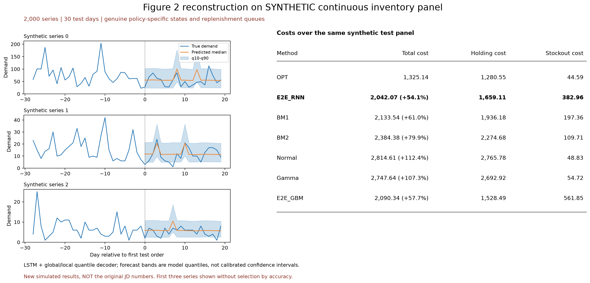
| method | holding_cost | stockout_cost | total_cost | turnover_days | stockout_ratio | relative_gap_pct |
|---|---|---|---|---|---|---|
| OPT | 1280.5540 | 44.5893 | 1325.1433 | 3.0743 | 0.0125 | 0.0000 |
| E2E_RNN | 1659.1092 | 382.9647 | 2042.0739 | 4.1827 | 0.0817 | 54.1021 |
| BM1 | 1936.1833 | 197.3600 | 2133.5433 | 4.8982 | 0.0497 | 61.0047 |
| BM2 | 2274.6752 | 109.7059 | 2384.3811 | 5.8820 | 0.0267 | 79.9338 |
| Normal | 2765.7757 | 48.8316 | 2814.6073 | 6.9308 | 0.0135 | 112.4002 |
| Gamma | 2692.9162 | 54.7199 | 2747.6362 | 6.7724 | 0.0149 | 107.3463 |
| E2E_GBM | 1528.4868 | 561.8529 | 2090.3397 | 3.8446 | 0.1057 | 57.7444 |
| second_level_category | third_level_category | source |
|---|---|---|
| Tea set | Tea set combination | Paper Table 1, p.767, reference transcription only |
| Tea set | Tea cup | Paper Table 1, p.767, reference transcription only |
| Tea set | Tea kettle | Paper Table 1, p.767, reference transcription only |
| Tea set | Tea tray | Paper Table 1, p.767, reference transcription only |
| Tea set | Tea can | Paper Table 1, p.767, reference transcription only |
| Tea set | Tea bowl | Paper Table 1, p.767, reference transcription only |
| Tea set | Tea accessories | Paper Table 1, p.767, reference transcription only |
| Tea set | Tea-ware decoration | Paper Table 1, p.767, reference transcription only |
| Tea set | Coffee set | Paper Table 1, p.767, reference transcription only |
| Tea set | Tea travel set | Paper Table 1, p.767, reference transcription only |
| Pastry essentials & seasoning | Baking supplies | Paper Table 1, p.767, reference transcription only |
| Pastry essentials & seasoning | Flour | Paper Table 1, p.767, reference transcription only |
| Pastry essentials & seasoning | Mixed grains | Paper Table 1, p.767, reference transcription only |
| Pastry essentials & seasoning | Rice | Paper Table 1, p.767, reference transcription only |
| Pastry essentials & seasoning | Oil | Paper Table 1, p.767, reference transcription only |
| Pastry essentials & seasoning | Seasonings | Paper Table 1, p.767, reference transcription only |
| Pastry essentials & seasoning | Dry foods | Paper Table 1, p.767, reference transcription only |
| Pastry essentials & seasoning | Convenience foods | Paper Table 1, p.767, reference transcription only |
| category | n_series |
|---|---|
| 0 | 323 |
| 1 | 376 |
| 2 | 328 |
| 3 | 322 |
| 4 | 332 |
| 5 | 319 |
| parameter | paper_reference | paper_reported_range | implementation |
|---|---|---|---|
| MQRNN hidden size | 50 | 30,40,50,60 | 50 |
| VLT layers | 50,20 | 100/20;50/20;30/20 | 50,20 |
| Integration layers | 100,100 | 1/2/3/4 layers of100 | 100,100 |
| Learning rate | 0.001 | 0.0001,0.001,0.01 | 0.001 |
| Learning-rate decay | 1e-4 | 1e-5,1e-4,1e-3 | 0; no decay in this run |
| Momentum | 0.85 | 0.8,0.85,0.9 | 0.85 if SGD; not applicable to Adam |
| Mini-batch size | 64 | 64,128,256 | 256 |
| Initialization | Gaussian(0,0.01) | Gaussian,Uniform | Gaussian(0,0.01); output biases calibrated |
| Activation | ReLU | ReLU,tanh | ReLU; softplus positive output; standard LSTM gates |
| Dropout | 0.2 | 0.1,0.2,0.3,0.4 | 0.2 |
| Optimizer | SGD family discussed | details incomplete | adam |
| Epochs | not reported | not reported | 10 |
| Forecast horizon | not reported | not reported | 20 |
| Quantiles | count ambiguity in text | see paper sec4.2 | 0.1,0.5,0.6,0.7,0.8,0.9,0.95 + mean |
| Loss and lambda weights | generic losses; small positive lambdas | not specified | SmoothL1 + 0.1 demand loss + 0.1 VLT MSE |
式(1)—(3)：以逐日持有成本和缺货成本构成多期目标，并维护净库存与订单到货队列；本文实现学习策略而非声称精确求解所有随机动态规划。式(4)—(6)：在离线无订单交叉条件下，用实际未来需求构造条件事后最优订货标签，训练时使用已成熟标签；独立线性规划测试验证其有限时域OPT。式(7)：Normal 使用随机提前期方差项；式(8)：Gamma 使用形状—尺度参数近似。式(9)—(10)：BM1累计需求分位数订货与BM2逐日预测路径的多期成本最优化。式(11)：含截距及干预前协变量的处理组回归；后续DID按原商品ID聚类。现场混合积欠/丢失销售是依据正文描述单独定义的模拟规则。原文推导和识别假设的解释见项目根目录 docs/公式与代码对应.md。
作者包缺少完整训练面板、原神经网络训练源码、权重及全部超参数。此处独立实现LSTM的MQ-RNN、全局/共享局部解码器、三个训练fork、VLT 50→20网络、100→100融合网络及真实LightGBM。累计需求分位数由单独监督头学习，没有把每日分位数直接相加。132维输入的组成是本工程公开定义，不声称与私有特征完全相同。预测跨度20天、SmoothL1订货损失加预测/VLT辅助损失及其权重、7个预测分位点加均值、Adam、批量256均是公开记录的重建选择；默认训练轮数见配置。论文未报告的选择不作为原作者设定。
定标只用第0—119天；训练标签最晚第279天，验证标签最晚第329天，测试第330—359天。在线输入只含已发生需求、已完成供应商记录、静态属性及事先已知促销/日历。当前与下一单真实提前期只进入训练标签或模拟器，不作为在线预测特征。每个策略执行到货→订货→需求→计费，不重置历史缺货，订货非负。OPT截断最后到货区间，BM截断保护期，平稳策略没有专门终端价值训练，因此与OPT差距包含期末效应，不能全部归因于模型预测质量。
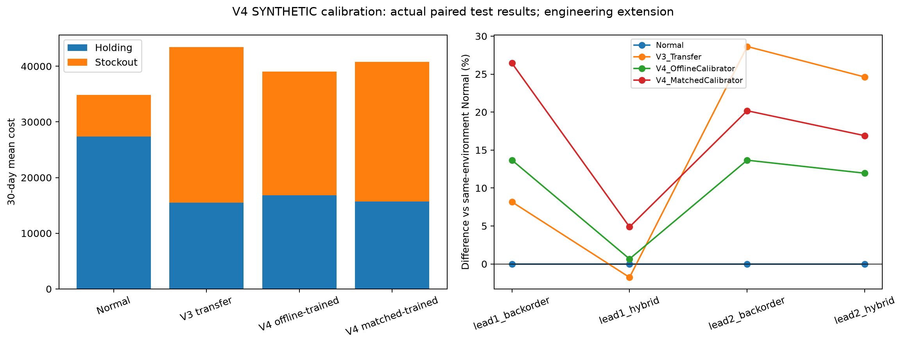
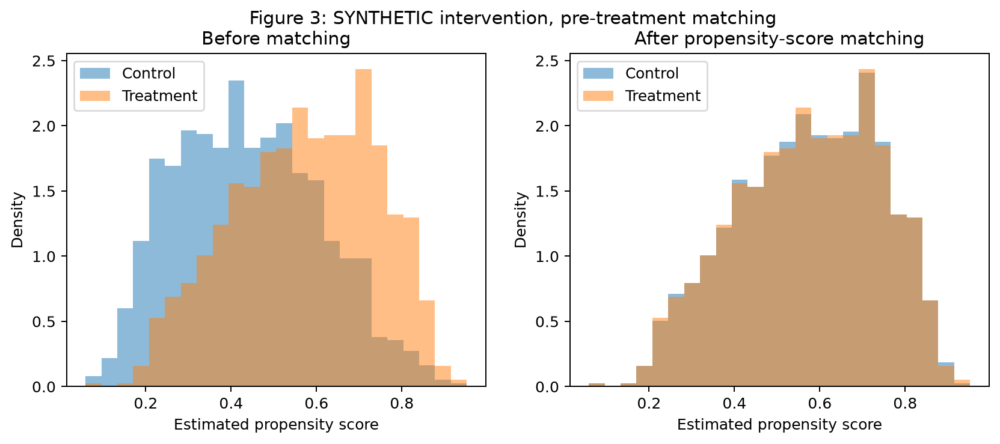
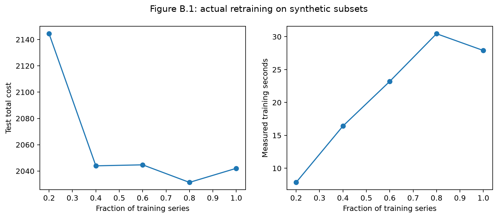
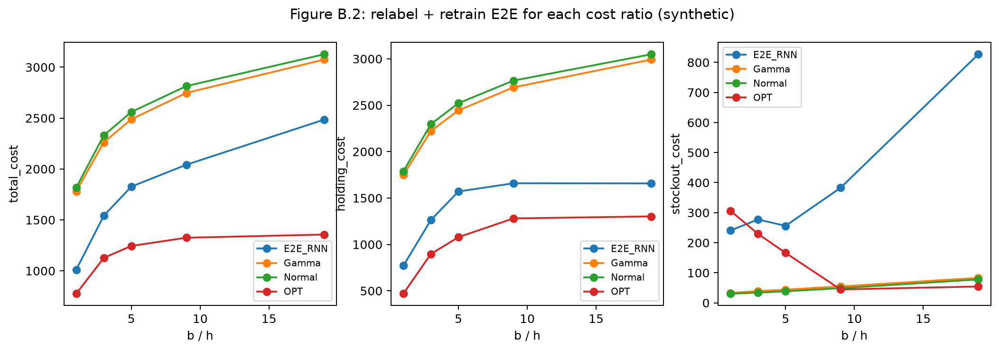
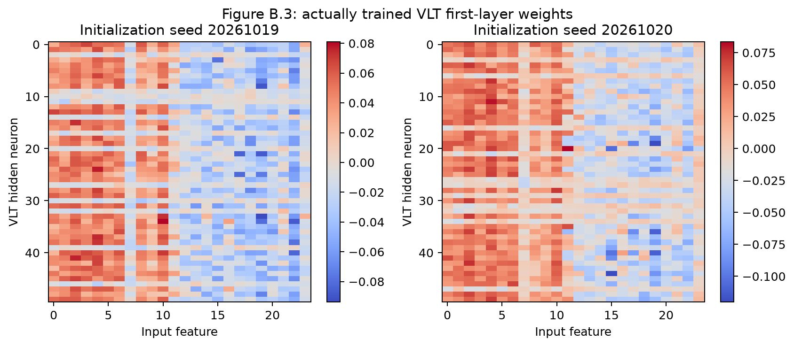
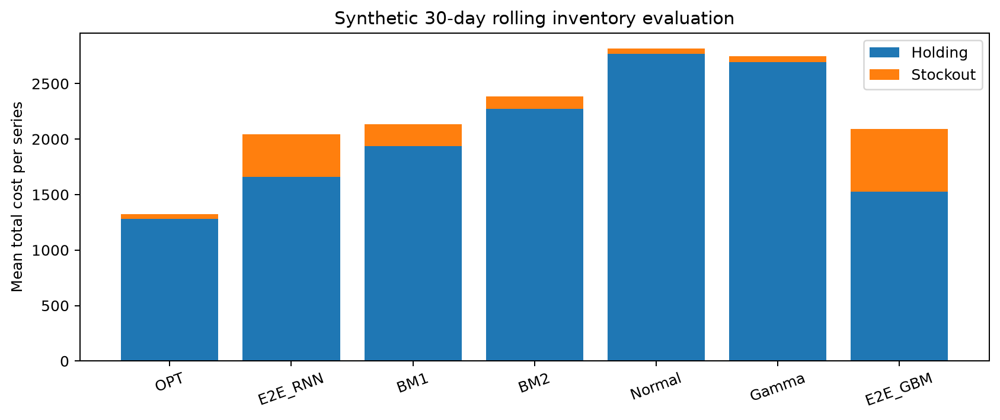
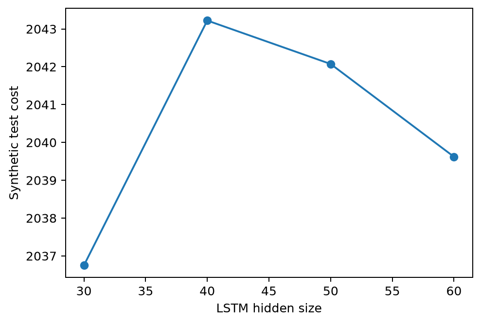
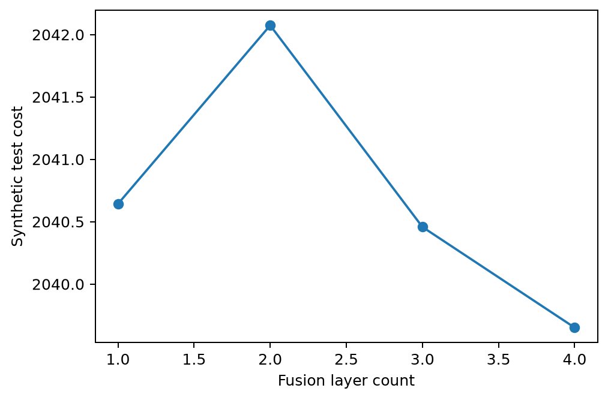
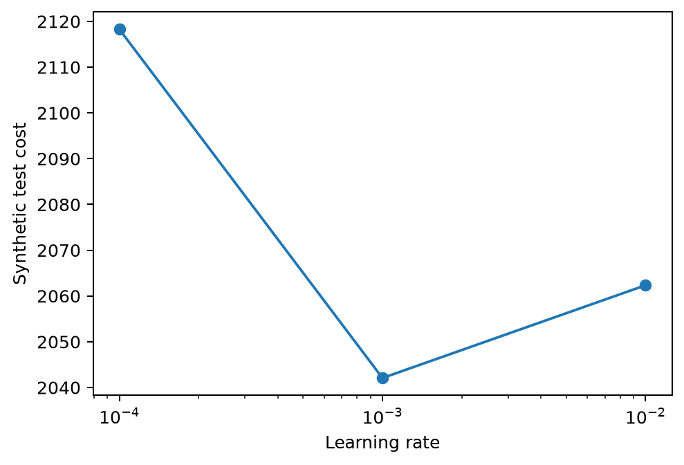
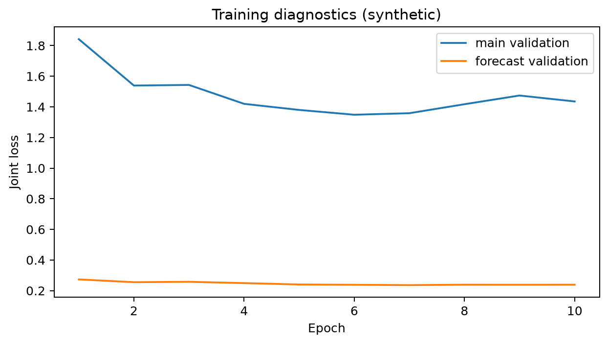
| value | method | holding_cost | stockout_cost | total_cost | turnover_days | stockout_ratio | relative_gap_pct | train_seconds | training_series | training_samples | best_epoch |
|---|---|---|---|---|---|---|---|---|---|---|---|
| 1 | E2E_RNN | 1661.5105 | 379.1324 | 2040.6429 | 4.2152 | 0.0791 | 53.9941 | 50.1606 | 2000 | 47806 | 6 |
| 2 | E2E_RNN | 1659.1092 | 382.9647 | 2042.0739 | 4.1827 | 0.0817 | 54.1021 | 27.9021 | 2000 | 47806 | 6 |
| 3 | E2E_RNN | 1651.0171 | 389.4407 | 2040.4577 | 4.1705 | 0.0823 | 53.9802 | 44.5163 | 2000 | 47806 | 5 |
| 4 | E2E_RNN | 1635.3711 | 404.2800 | 2039.6511 | 4.1149 | 0.0839 | 53.9193 | 47.1033 | 2000 | 47806 | 8 |
| value | method | holding_cost | stockout_cost | total_cost | turnover_days | stockout_ratio | relative_gap_pct | train_seconds | training_series | training_samples | best_epoch |
|---|---|---|---|---|---|---|---|---|---|---|---|
| 30 | E2E_RNN | 1637.2013 | 399.5491 | 2036.7504 | 4.1301 | 0.0843 | 53.7004 | 45.4082 | 2000 | 47806 | 7 |
| 40 | E2E_RNN | 1660.8158 | 382.4063 | 2043.2221 | 4.1799 | 0.0823 | 54.1888 | 38.7116 | 2000 | 47806 | 7 |
| 50 | E2E_RNN | 1659.1092 | 382.9647 | 2042.0739 | 4.1827 | 0.0817 | 54.1021 | 27.9021 | 2000 | 47806 | 6 |
| 60 | E2E_RNN | 1633.1346 | 406.4860 | 2039.6206 | 4.1160 | 0.0858 | 53.9170 | 37.1907 | 2000 | 47806 | 6 |
| value | method | holding_cost | stockout_cost | total_cost | turnover_days | stockout_ratio | relative_gap_pct | train_seconds | training_series | training_samples | best_epoch |
|---|---|---|---|---|---|---|---|---|---|---|---|
| 0.0001 | E2E_RNN | 1490.6697 | 627.6071 | 2118.2768 | 3.7222 | 0.1108 | 59.8527 | 39.4997 | 2000 | 47806 | 10 |
| 0.0010 | E2E_RNN | 1659.1092 | 382.9647 | 2042.0739 | 4.1827 | 0.0817 | 54.1021 | 27.9021 | 2000 | 47806 | 6 |
| 0.0100 | E2E_RNN | 1676.7246 | 385.6180 | 2062.3426 | 4.2027 | 0.0815 | 55.6317 | 38.2011 | 2000 | 47806 | 9 |
| value | method | holding_cost | stockout_cost | total_cost | turnover_days | stockout_ratio | relative_gap_pct | train_seconds | training_series | training_samples | best_epoch |
|---|---|---|---|---|---|---|---|---|---|---|---|
| 0.2000 | E2E_RNN | 1748.5885 | 395.8442 | 2144.4327 | 4.3332 | 0.0783 | 61.8265 | 7.8541 | 400 | 9458 | 8 |
| 0.4000 | E2E_RNN | 1611.0070 | 432.9575 | 2043.9645 | 4.0734 | 0.0881 | 54.2448 | 16.4208 | 800 | 19052 | 9 |
| 0.6000 | E2E_RNN | 1680.5492 | 364.1705 | 2044.7197 | 4.2613 | 0.0772 | 54.3018 | 23.2055 | 1200 | 28582 | 6 |
| 0.8000 | E2E_RNN | 1595.2844 | 436.0816 | 2031.3660 | 4.0418 | 0.0892 | 53.2941 | 30.4529 | 1600 | 38100 | 7 |
| 1.0000 | E2E_RNN | 1659.1092 | 382.9647 | 2042.0739 | 4.1827 | 0.0817 | 54.1021 | 27.9021 | 2000 | 47806 | 6 |
| value | method | holding_cost | stockout_cost | total_cost | turnover_days | stockout_ratio | relative_gap_pct | train_seconds | training_series | training_samples | best_epoch |
|---|---|---|---|---|---|---|---|---|---|---|---|
| 20261019 | E2E_RNN | 1659.1092 | 382.9647 | 2042.0739 | 4.1827 | 0.0817 | 54.1021 | 27.9021 | 2000 | 47806 | 6 |
| 20261020 | E2E_RNN | 1651.6028 | 387.4447 | 2039.0475 | 4.1536 | 0.0832 | 53.8737 | 37.7618 | 2000 | 47806 | 10 |
| value | method | holding_cost | stockout_cost | total_cost | turnover_days | stockout_ratio | relative_gap_pct | train_seconds | training_series |
|---|---|---|---|---|---|---|---|---|---|
| 1.0000 | OPT | 469.4268 | 306.1355 | 775.5624 | 1.1336 | 0.3564 | 0.0000 | 38.1834 | 2000 |
| 1.0000 | E2E_RNN | 770.5224 | 240.7608 | 1011.2832 | 1.9685 | 0.2967 | 30.3935 | 38.1834 | 2000 |
| 1.0000 | Normal | 1787.2035 | 30.4623 | 1817.6658 | 4.4448 | 0.0630 | 134.3675 | 38.1834 | 2000 |
| 1.0000 | Gamma | 1748.8579 | 32.9938 | 1781.8517 | 4.3404 | 0.0676 | 129.7496 | 38.1834 | 2000 |
| 3.0000 | OPT | 897.7857 | 229.4586 | 1127.2443 | 2.1552 | 0.1486 | 0.0000 | 37.4300 | 2000 |
| 3.0000 | E2E_RNN | 1263.6072 | 277.4299 | 1541.0371 | 3.1929 | 0.1497 | 36.7083 | 37.4300 | 2000 |
| 3.0000 | Normal | 2296.2334 | 33.8571 | 2330.0904 | 5.7390 | 0.0262 | 106.7068 | 37.4300 | 2000 |
| 3.0000 | Gamma | 2222.6929 | 39.0782 | 2261.7711 | 5.5593 | 0.0294 | 100.6460 | 37.4300 | 2000 |
| 5.0000 | OPT | 1078.3844 | 166.1316 | 1244.5159 | 2.5812 | 0.0775 | 0.0000 | 37.9853 | 2000 |
| 5.0000 | E2E_RNN | 1570.8508 | 256.1301 | 1826.9810 | 3.9606 | 0.0930 | 46.8025 | 37.9853 | 2000 |
| 5.0000 | Normal | 2522.0070 | 38.2928 | 2560.2999 | 6.3123 | 0.0185 | 105.7266 | 37.9853 | 2000 |
| 5.0000 | Gamma | 2444.7972 | 43.9946 | 2488.7918 | 6.1320 | 0.0209 | 99.9807 | 37.9853 | 2000 |
| 9.0000 | OPT | 1280.5540 | 44.5893 | 1325.1433 | 3.0743 | 0.0125 | 0.0000 | 27.9021 | 2000 |
| 9.0000 | E2E_RNN | 1659.1092 | 382.9647 | 2042.0739 | 4.1827 | 0.0817 | 54.1021 | 27.9021 | 2000 |
| 9.0000 | Normal | 2765.7757 | 48.8316 | 2814.6073 | 6.9308 | 0.0135 | 112.4002 | 27.9021 | 2000 |
| 9.0000 | Gamma | 2692.9162 | 54.7199 | 2747.6362 | 6.7724 | 0.0149 | 107.3463 | 27.9021 | 2000 |
| 19.0000 | OPT | 1301.9995 | 54.3565 | 1356.3560 | 3.1246 | 0.0073 | 0.0000 | 38.5782 | 2000 |
| 19.0000 | E2E_RNN | 1657.8463 | 827.0419 | 2484.8881 | 4.1829 | 0.0830 | 83.2032 | 38.5782 | 2000 |
| 19.0000 | Normal | 3048.9553 | 77.8287 | 3126.7840 | 7.6490 | 0.0102 | 130.5283 | 38.5782 | 2000 |
| 19.0000 | Gamma | 2991.9326 | 83.0993 | 3075.0319 | 7.5453 | 0.0107 | 126.7127 | 38.5782 | 2000 |
| metric | treatment_mean | control_mean | difference | relative_change_pct | p_clustered | p_welch_descriptive | p_student_descriptive | matched_pairs |
|---|---|---|---|---|---|---|---|---|
| holding_cost | 17940.0751 | 31934.4149 | -13994.3398 | -43.8221 | 0.0000 | 0.0000 | 0.0000 | 1016 |
| stockout_cost | 28993.0960 | 8142.8573 | 20850.2388 | 256.0556 | 0.0000 | 0.0000 | 0.0000 | 1016 |
| total_cost | 46933.1711 | 40077.2722 | 6855.8989 | 17.1067 | 0.0035 | 0.0000 | 0.0000 | 1016 |
| turnover_days | 2.5366 | 4.5461 | -2.0095 | -44.2036 | 0.0000 | 0.0000 | 0.0000 | 1016 |
| stockout_ratio | 0.2648 | 0.0929 | 0.1719 | 184.9276 | 0.0000 | 0.0000 | 0.0000 | 1016 |
| metric | term | coefficient | standard_error_clustered | p_clustered |
|---|---|---|---|---|
| holding_cost | const | 8510.9411 | 1538.6110 | 0.0000 |
| holding_cost | treated | -13918.8188 | 718.0680 | 0.0000 |
| holding_cost | pre_demand | 1275.7184 | 72.7489 | 0.0000 |
| holding_cost | pre_lead | 168.2599 | 265.3633 | 0.5260 |
| stockout_cost | const | -20270.2229 | 2922.4182 | 0.0000 |
| stockout_cost | treated | 20940.5636 | 1268.5370 | 0.0000 |
| stockout_cost | pre_demand | 1186.0841 | 126.0454 | 0.0000 |
| stockout_cost | pre_lead | 1581.9129 | 442.9321 | 0.0004 |
| total_cost | const | -11759.2818 | 2675.3644 | 0.0000 |
| total_cost | treated | 7021.7448 | 1154.0137 | 0.0000 |
| total_cost | pre_demand | 2461.8025 | 119.3100 | 0.0000 |
| total_cost | pre_lead | 1750.1727 | 392.8859 | 0.0000 |
| turnover_days | const | 4.4651 | 0.2358 | 0.0000 |
| turnover_days | treated | -2.0093 | 0.1106 | 0.0000 |
| turnover_days | pre_demand | -0.0135 | 0.0042 | 0.0015 |
| turnover_days | pre_lead | 0.0688 | 0.0364 | 0.0585 |
| stockout_ratio | const | 0.0695 | 0.0141 | 0.0000 |
| stockout_ratio | treated | 0.1720 | 0.0067 | 0.0000 |
| stockout_ratio | pre_demand | 0.0005 | 0.0003 | 0.0906 |
| stockout_ratio | pre_lead | 0.0030 | 0.0025 | 0.2318 |
| metric | treatment_pre | treatment_post | control_pre | control_post | did | standard_error_clustered | p_clustered |
|---|---|---|---|---|---|---|---|
| holding_cost | 43631.3652 | 17940.0751 | 44846.2766 | 31934.4149 | -12779.4285 | 1563.9610 | 0.0000 |
| stockout_cost | 564.8453 | 28993.0960 | 672.3180 | 8142.8573 | 20957.7114 | 1500.9542 | 0.0000 |
| total_cost | 44196.2105 | 46933.1711 | 45518.5946 | 40077.2722 | 8178.2830 | 1358.1223 | 0.0000 |
| turnover_days | 7.7489 | 2.5366 | 7.8684 | 4.5461 | -1.8900 | 0.1620 | 0.0000 |
| stockout_ratio | 0.0121 | 0.2648 | 0.0110 | 0.0929 | 0.1708 | 0.0070 | 0.0000 |
| variable | SMD_before | SMD_after |
|---|---|---|
| log_pre_demand | 0.5331 | -0.0099 |
| pre_lead | -0.5333 | -0.0107 |
这是模拟干预而非京东现场。第300—329天预热、330—359天干预前、360—369天过渡，连续传递库存和在途订单，370天切换策略并观察至399天。PSM只用干预前变量，有放回匹配按原商品ID聚类。V4校准成本训练220—279，编码器信息截至329，两个校准头均按330—359同一现场验证环境选轮次。匹配头训练/验证/测试均采用2—8天与hybrid，h=12、b=88；另一个头仅训练环境不同，作为控制。策略只接收可观测库存与在途总量，实际未来到货日只用于模拟器。假定包括未满足需求在内的真实历史需求可观测。现场费用按每商品30天求和；Normal替代京东私有算法，共享模型替代原文分品类训练。两期DID不能检验平行趋势，合成显著性不证明真实业务因果效果。
author_disclosed 子目录按作者公开notebook口径重算现有预测和现场样本，data/author保留原始CSV。该口径存在负补货、库存处理和Normal方差等问题，详见 docs/作者数据与口径.md，不能与修正后的新模拟成本混为一谈。数据量和截取窗口也不同于论文整体现有结果，因此仍不会逐项等于原Figure 2。
author_disclosed/tables/field_did.csv
author_disclosed/tables/field_regressions.csv
author_disclosed/tables/field_row_metrics.csv
author_disclosed/tables/field_summary.csv
author_disclosed/tables/field_ttests.csv
author_disclosed/tables/matching_balance.csv
author_disclosed/tables/matching_indices.csv
author_disclosed/tables/offline_by_sku.csv
author_disclosed/tables/offline_summary.csv
在项目根目录执行 python run_full.py --profile standard --stage all。quick用于安装验证；large生成一万条序列。训练、验证、测试、敏感性、现场、图表和报告可按stage运行。数据与模型有签名，设置改变会拒绝误用缓存，使用不同目录或--force明确重跑。测试执行 python -m unittest discover -s tests -v。模型权重、每轮训练日志、分位点验证选择、逐商品成本、逐日库存、逐单到货、匹配样本与回归系数均保存，便于检查每一项结果。
本次目录应有的 15 张主表/附录表：已生成 15 张。完整性清单见 logs/coverage_manifest.json。该检查只证明产物存在，数学、时间顺序和结果来源还须结合测试与协议核验。